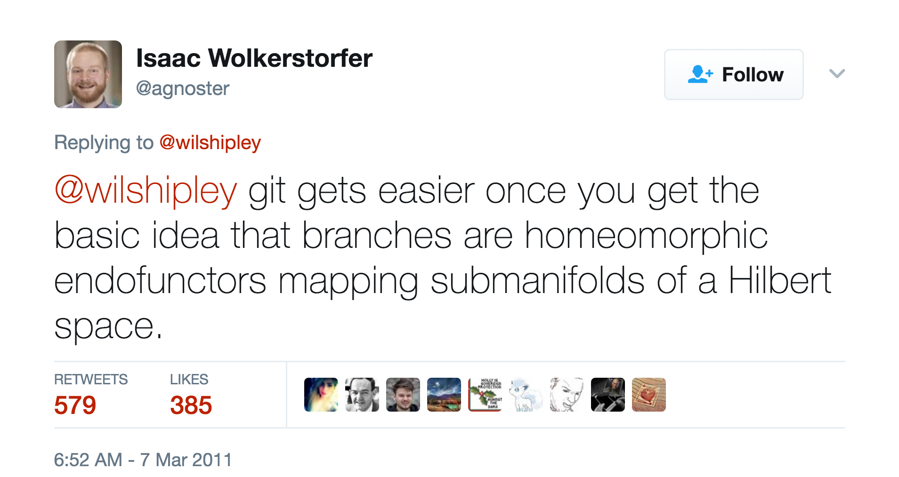

Get Better With All Things Git
Asbjørn Ulsberg

Git
DAG
Git
Directed Acyclic Graph
Commits
const char*
sha1(content,
author,
date,
message,
parent_sha1);
// 7ecd1598a3e6bb7c3c0d7cbda24e7dc
References
- Local branch reference
- Remote branch reference
- Tag reference
add clone fetch log p4 repack submodule--helper
add--interactive column fetch-pack ls-files pack-objects replace svn
am commit filter-branch ls-remote pack-redundant request-pull symbolic-ref
annotate commit-tree fmt-merge-msg ls-tree pack-refs rerere tag
apply config for-each-ref mailinfo patch-id reset unpack-file
archimport count-objects format-patch mailsplit prune rev-list unpack-objects
archive credential fsck merge prune-packed rev-parse update-index
bisect credential-cache fsck-objects merge-base pull revert update-ref
bisect--helper credential-cache--daemon gc merge-file push rm update-server-info
blame credential-store get-tar-commit-id merge-index quiltimport send-email upload-archive
branch cvsexportcommit grep merge-octopus read-tree send-pack upload-pack
bundle cvsimport gui merge-one-file rebase sh-i18n--envsubst var
cat-file cvsserver gui--askpass merge-ours rebase--helper shell verify-commit
check-attr daemon hash-object merge-recursive receive-pack shortlog verify-pack
check-ignore describe help merge-resolve reflog show verify-tag
check-mailmap diff http-backend merge-subtree remote show-branch web--browse
check-ref-format diff-files http-fetch merge-tree remote-ext show-index whatchanged
checkout diff-index http-push mergetool remote-fd show-ref worktree
checkout-index diff-tree index-pack mktag remote-ftp stage write-tree
cherry difftool init mktree remote-ftps stash
cherry-pick difftool--helper init-db mv remote-http status
citool fast-export instaweb name-rev remote-https stripspace
clean fast-import interpret-trailers notes remote-testsvn submodule